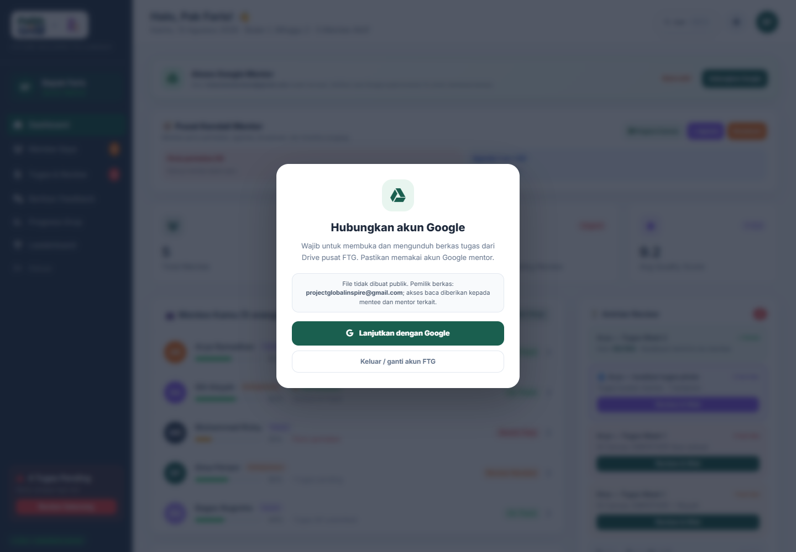
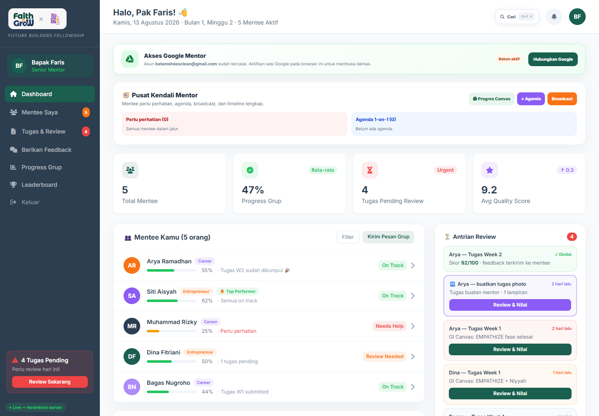
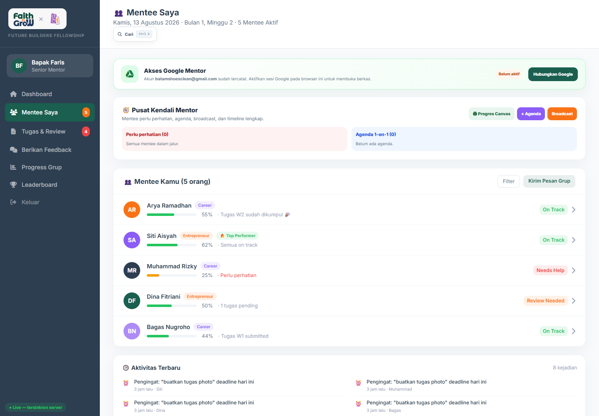
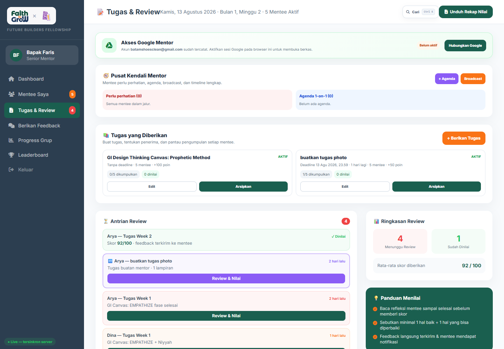
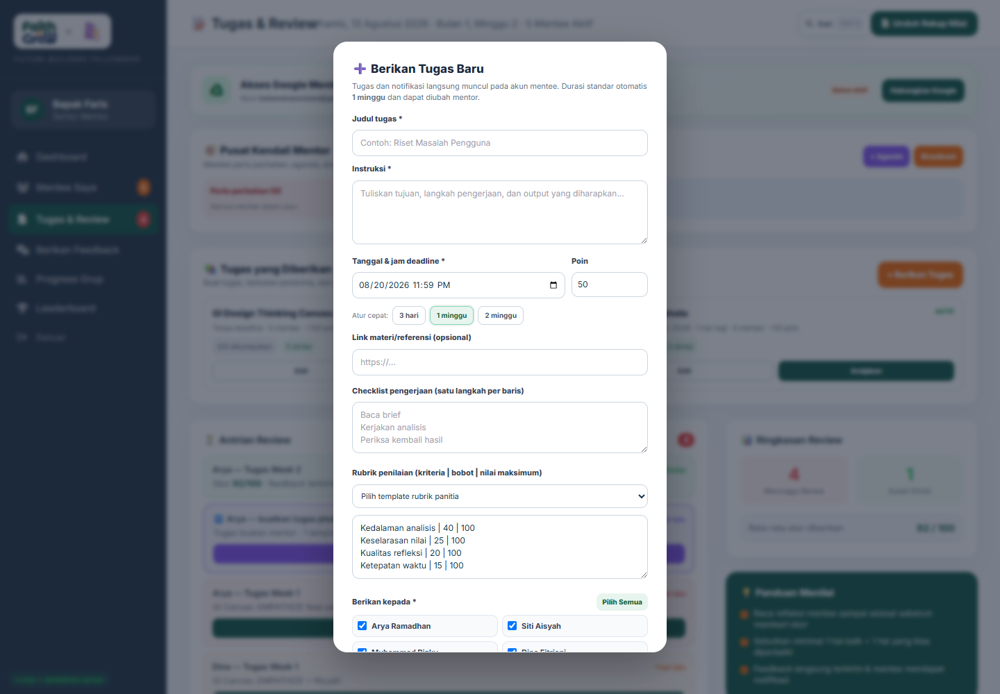
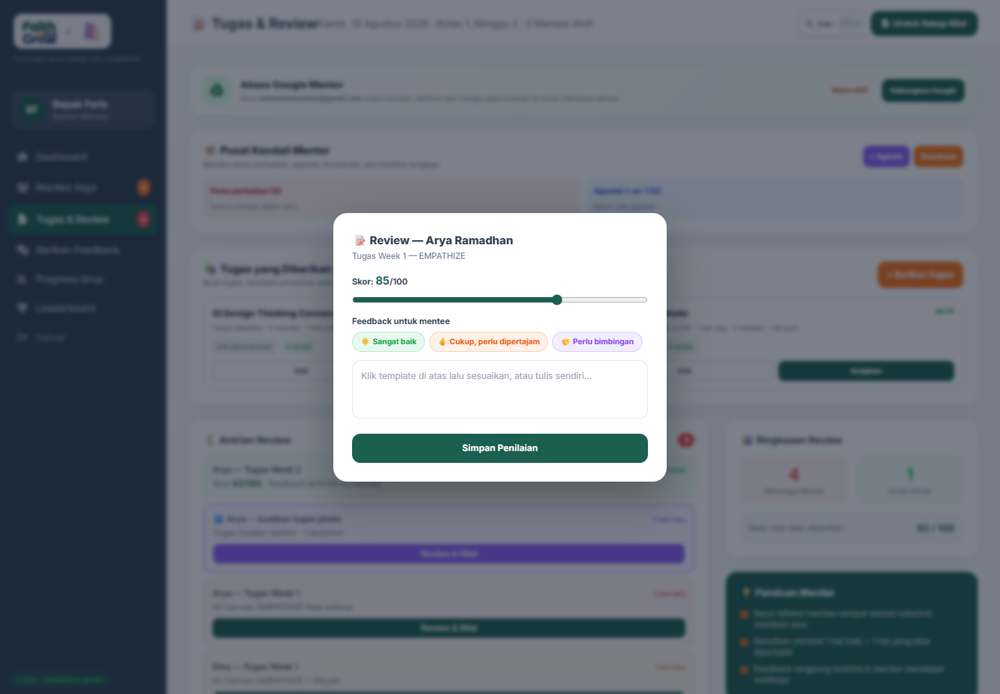
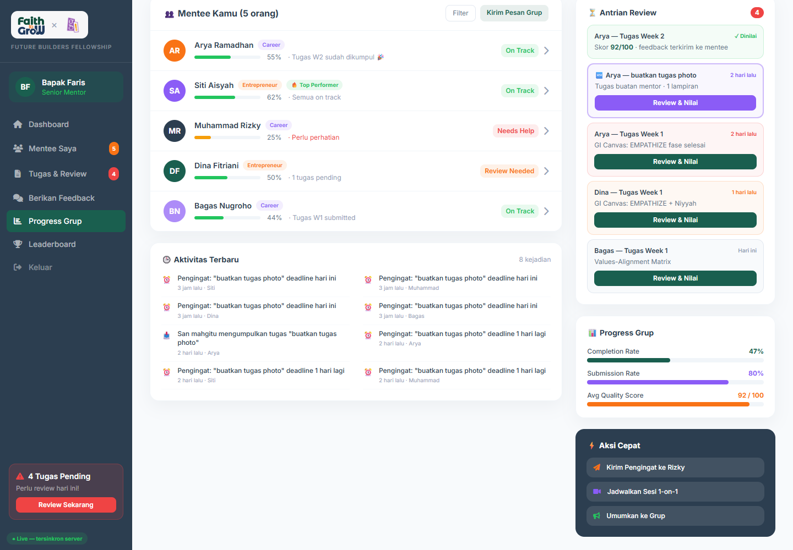
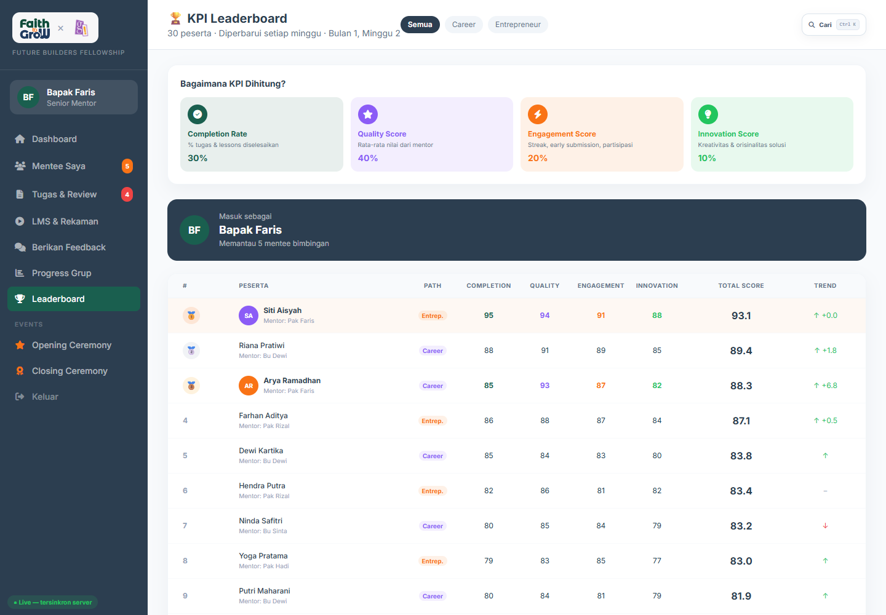
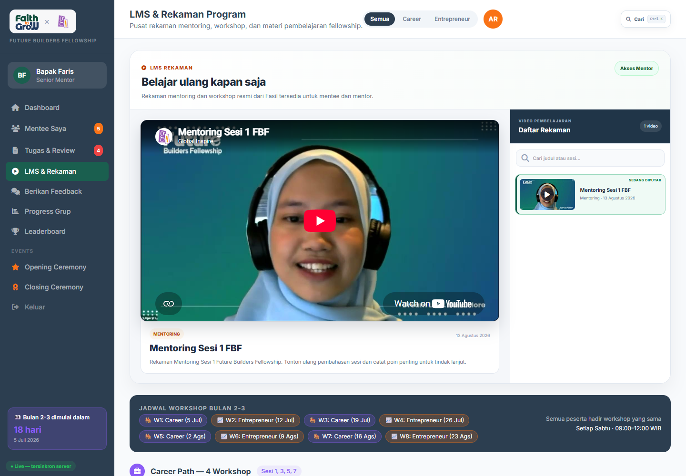

Faith to GroW × Global Inspire
FUTURE BUILDERS FELLOWSHIP 2026
Panduan Lengkap
Dashboard Mentor
Buku pegangan untuk mendampingi mentee, memberikan tugas, menetapkan deadline, meninjau karya, meminta revisi, memberi nilai, dan memonitor perkembangan kelompok.
5 menteepemantauan kelompok
1 minggudeadline standar tugas
Riwayat utuhversi dan feedback aman
Versi 1.0
Disusun dari dashboard produksi
13 Agustus 2026 · Asia/Makassar
Mulai di siniTujuan dan daftar isi
Panduan ini menjelaskan pekerjaan Mentor dari login sampai evaluasi. Gunakan dashboard sebagai sumber data resmi; jangan menyimpan nilai atau status tugas hanya di chat pribadi.
01Login dan Google Drive
08Revisi dan riwayat versi
02Orientasi dashboard
09Komunikasi mentee
03SOP Mentor
10Progress dan leaderboard
04Mentee Saya
11LMS dan rekaman
05Tugas & Review
12Keamanan dan troubleshooting
06Memberikan tugas
13Checklist Mentor
07Review, rubrik, dan nilai
Login dan hubungkan akun Google

Gambar 1. Mentor wajib menghubungkan akun Google sebelum mengakses berkas tugas.
- Pilih tab Mentor pada halaman login.
- Masuk dengan email/password FTG atau akun Google yang telah disetujui Fasil.
- Jika muncul layar Hubungkan akun Google, klik Lanjutkan dengan Google.
- Pilih akun Google Mentor dan izinkan akses yang diminta.
- Setelah kembali ke dashboard, pastikan layar penghubung tidak muncul lagi.
Mengapa wajib? Berkas mentee tersimpan di Drive pusat FTG dan tidak dibuat publik. Hak baca diberikan kepada mentor terkait melalui akun Google yang dihubungkan.
Jangan memakai akun Google orang lain. Jangan pernah mengirim token, password, atau kode verifikasi kepada siapa pun.
02 · OrientasiMengenal Dashboard Mentor

Gambar 2. Dashboard produksi Mentor setelah akses Google tersambung.
Pusat KendaliMentee perlu perhatian, agenda 1-on-1, broadcast, dan timeline.
RingkasanTotal mentee, progress kelompok, review tertunda, dan rata-rata nilai.
Antrian ReviewDaftar submission yang perlu segera dibaca dan dinilai.
Prioritaskan yang berwarna merah/oranye. Tindak lanjuti tugas terlambat, revisi yang tertahan, dan mentee yang mulai tidak aktif.
03 · RutinitasSOP harian dan mingguan Mentor
Setiap hariPeriksa notifikasi, pertanyaan mentee, dan antrian review.
Setiap mingguBerikan arahan, cek progres, review karya, dan jadwalkan 1-on-1.
Akhir fasePastikan seluruh nilai, feedback, serta revisi sudah selesai.
Urutan pembukaan hari
- Buka Dashboard dan baca bagian Perlu Perhatian.
- Periksa Tugas & Review; selesaikan submission tertua terlebih dahulu.
- Buka Mentee Saya; cek aktivitas dan progres yang menurun.
- Balas diskusi tugas dan pesan penting.
- Catat atau buat agenda 1-on-1 bila perlu.
Standar layanan yang disarankan
| Aktivitas | Target | Hasil |
|---|
| Balas pertanyaan | ≤ 1 hari kerja | Mentee tidak tertahan |
| Review tugas | ≤ 2–3 hari | Feedback masih relevan |
| Tugas baru | Instruksi + deadline jelas | Tidak ada interpretasi ganda |
| Permintaan revisi | Spesifik dan terukur | Mentee tahu apa yang diperbaiki |
04 · PendampinganMentee Saya

Gambar 3. Daftar mentee yang dipasangkan kepada Mentor oleh Fasil.
Cara membaca daftar
- Nama, jalur belajar, dan status online.
- Persentase progress dan aktivitas terakhir.
- Status seperti On Track atau Needs Help.
- Ringkasan tugas atau kondisi yang perlu perhatian.
Batas akses: Mentor hanya melihat mentee yang dipasangkan kepadanya. Jika ada nama yang salah atau mentee belum muncul, hubungi Fasil untuk memperbaiki Cohort & Pairing.
Kapan mentee perlu dihubungi?
Progress berhentiTidak ada aktivitas beberapa hari saat fase berjalan.
Deadline mendekatTugas belum dimulai menjelang H-3/H-1.
Revisi berulangPerlu penjelasan langsung atau sesi singkat.
Nilai menurunCari hambatan, jangan hanya mengejar skor.
Pusat Tugas & Review

Gambar 4. Satu halaman untuk membuat tugas, memantau pengumpulan, dan menilai.
Tugas yang diberikanLihat penerima, deadline, jumlah terkumpul, dan jumlah dinilai.
Antrian ReviewSubmission baru, lama menunggu, dan yang sudah dinilai.
RingkasanJumlah menunggu, selesai, serta rata-rata skor.
Alur status
Belum dikerjakan→Draft→Menunggu Review→Revisi / Dinilai
06 · Memberikan tugasBuat tugas dengan instruksi lengkap

Gambar 5. Form tugas Mentor dengan deadline standar satu minggu.
- Klik + Berikan Tugas.
- Isi judul yang singkat dan spesifik.
- Tulis tujuan, langkah pengerjaan, dan output yang diharapkan.
- Tentukan deadline. Sistem memilih 1 minggu sebagai standar; gunakan 3 hari/2 minggu hanya bila sesuai beban tugas.
- Isi poin, referensi, dan checklist satu langkah per baris.
- Pilih template rubrik atau isi kriteria, bobot, dan nilai maksimum.
- Pilih mentee penerima, lalu klik Berikan Tugas & Kirim Notifikasi.
Sebelum mengirim: periksa tanggal, zona waktu, penerima, bobot total 100%, dan link referensi. Perubahan deadline setelah publikasi harus dikomunikasikan.
07 · PenilaianReview, rubrik, feedback, dan nilai

Gambar 6. Review submission: skor, template feedback, dan catatan Mentor.
- Buka submission dari Antrian Review.
- Baca instruksi tugas, jawaban, checklist, tautan, serta riwayat versi.
- Buka atau unduh lampiran dari Drive pusat.
- Isi setiap kriteria rubrik; pastikan skor sesuai bukti pada karya.
- Tulis minimal satu kekuatan dan satu hal yang perlu diperbaiki.
- Pilih Setujui/Dinilai atau Minta Revisi.
- Simpan. Mentee menerima notifikasi dan feedback tersimpan pada riwayat.
Contoh feedback yang baik
Spesifik: “Wawancara sudah menggambarkan kebutuhan pengguna. Pada bagian Define, sempitkan problem statement menjadi satu kelompok pengguna dan satu hambatan utama. Tambahkan bukti dari dua kutipan wawancara.”
Hindari: “Kurang bagus”, “perbaiki lagi”, atau skor tanpa alasan. Feedback seperti ini tidak memberi arah belajar.
08 · RevisiRiwayat versi tidak boleh hilang
Ketika meminta revisi, sistem mempertahankan versi lama, feedback sebelumnya, waktu pengumpulan, dan nilai/review terkait. Mentor dapat membandingkan perkembangan, bukan hanya melihat berkas terakhir.
Versi 1→Feedback Mentor→Perlu Revisi→Versi 2→Review Akhir
Prosedur meminta revisi
- Tentukan bagian yang wajib diperbaiki.
- Jelaskan indikator selesai, bukan sekadar “buat lebih baik”.
- Berikan batas waktu revisi yang realistis.
- Jangan menghapus nilai/feedback lama secara manual.
- Saat versi baru masuk, bandingkan dengan versi sebelumnya sebelum menyetujui.
VersiIsi, link, dan lampiran pada setiap pengumpulan.
ReviewSkor, rubrik, keputusan, dan pemberi nilai.
DiskusiPertanyaan mentee dan jawaban Mentor dalam konteks tugas.
Jika mentee menghapus lampiran dari formulir: versi pengumpulan lama tetap menjadi arsip; penghapusan berkas aktif mengikuti aturan Drive pusat dan audit.
09 · KomunikasiPesan, pengingat, broadcast, dan agenda
Pesan individualUntuk hambatan personal, klarifikasi, atau tindak lanjut revisi.
Pesan grupUntuk informasi yang sama kepada seluruh mentee dampingan.
BroadcastPengumuman singkat; hindari membagikan data pribadi peserta.
Agenda 1-on-1Catat waktu, tujuan, dan peserta agar muncul di dashboard.
Notifikasi yang diterima mentee
| Peristiwa | Pesan | Tindakan Mentor |
|---|
| Tugas baru | Judul dan deadline | Pastikan instruksi siap dijawab |
| H-3 / H-1 | Pengingat otomatis | Hubungi yang belum mulai bila perlu |
| Feedback | Nilai dan catatan | Siap menjawab klarifikasi |
| Revisi | Permintaan perbaikan | Berikan batas waktu jelas |
Gunakan bahasa pendampingan: jelas, menghargai usaha, fokus pada perilaku/karya, dan memberi langkah berikutnya.
10 · MonitoringProgress Grup dan Leaderboard

Gambar 7. Ringkasan progres kelompok pada dashboard Mentor.

Gunakan untuk
- Mendeteksi peserta yang tertinggal.
- Melihat tren penyelesaian tugas.
- Membandingkan KPI secara sehat.
- Memberikan dukungan yang tepat.
Leaderboard bukan alat mempermalukan. Jangan membagikan nilai detail peserta di luar sistem atau menjadikan peringkat satu-satunya ukuran perkembangan.
Belajar dari rekaman program

Gambar 8. Workshop Library dan rekaman resmi yang diterbitkan Fasil.
- Mentor dapat menonton materi dan rekaman untuk menyamakan konteks pembelajaran.
- Filter membantu menemukan jalur Career atau Entrepreneur.
- Hanya Fasil yang menerbitkan, mengedit, atau menghapus rekaman.
- Jika video tidak tampil, periksa koneksi lalu gunakan tautan YouTube yang tersedia.
Gunakan rekaman sebelum sesi mentoring agar arahan Mentor konsisten dengan materi resmi program.
12 · BantuanKeamanan dan troubleshooting
| Masalah | Pemeriksaan | Tindakan |
|---|
| Dashboard terkunci oleh layar Google | Akun Google Mentor | Klik Lanjutkan dengan Google dan selesaikan izin |
| Lampiran tidak dapat dibuka | Akun Google aktif dan status Drive | Hubungkan ulang; laporkan nama tugas ke Fasil |
| Mentee tidak muncul | Cohort & Pairing | Hubungi Fasil, jangan memakai akun mentor lain |
| Tugas tidak muncul pada mentee | Penerima dan status publikasi | Periksa tugas di Tugas & Review |
| Nilai gagal tersimpan | Koneksi dan kelengkapan rubrik | Jangan menekan berulang; muat ulang dan periksa riwayat |
| Video terus memuat | YouTube/koneksi | Muat ulang atau buka tautan eksternal |
Aturan keamanan
- Gunakan akun Mentor sendiri.
- Jangan unduh berkas mentee ke perangkat publik.
- Jangan meneruskan link Drive kepada pihak di luar program.
- Jangan meminta password atau token mentee.
- Laporkan akses yang salah kepada Fasil.
Saat melapor: sertakan halaman, waktu, nama tugas/mentee, dan screenshot tanpa password atau token.
13 · ChecklistChecklist Mentor sebelum minggu ditutup
Akses
- Akun Google Mentor tersambung.
- Daftar mentee sudah benar.
- Notifikasi dapat dibuka.
Tugas
- Judul dan instruksi jelas.
- Deadline dan zona waktu benar.
- Rubrik total 100%.
- Penerima sudah tepat.
Review
- Tidak ada submission terlalu lama.
- Semua lampiran sudah dibaca.
- Skor sesuai rubrik.
- Feedback spesifik dan sopan.
Revisi
- Permintaan revisi terukur.
- Batas waktu jelas.
- Versi lama tetap tersimpan.
Pendampingan
- Mentee berisiko dihubungi.
- Agenda 1-on-1 tercatat.
- Pertanyaan sudah dijawab.
Penutupan
- Nilai final lengkap.
- Progress grup diperiksa.
- Masalah dilaporkan ke Fasil.
Prinsip Mentor: arahkan dengan konteks, nilai dengan bukti, dan simpan seluruh keputusan pada sistem.
Faith to GroW × Global Inspire
Future Builders Fellowship 2026